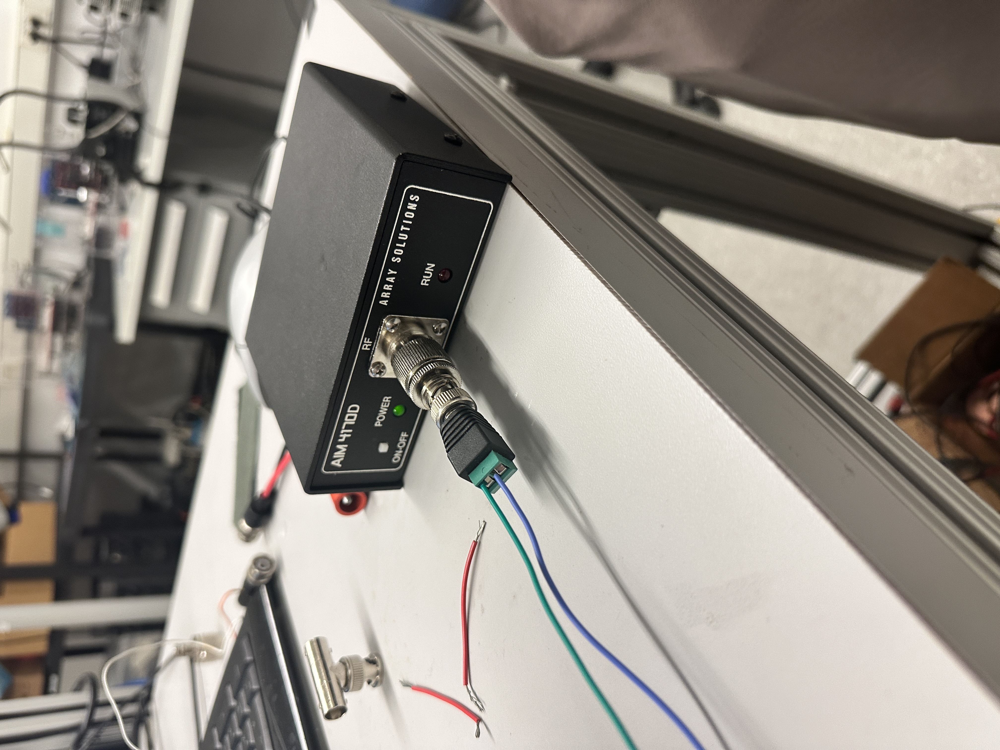
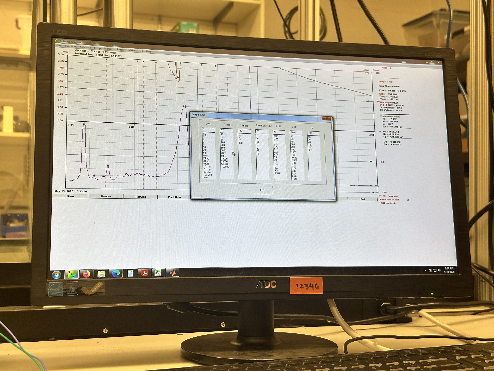
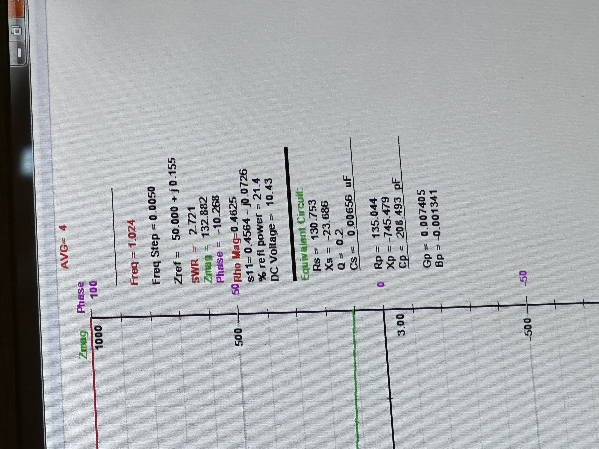
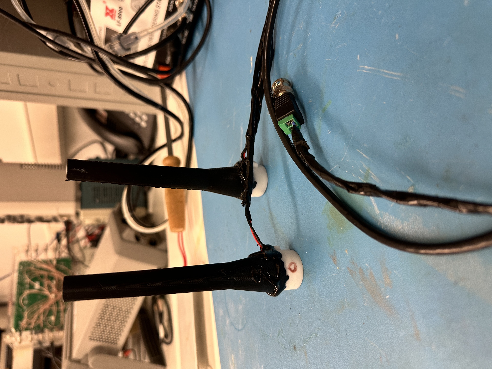
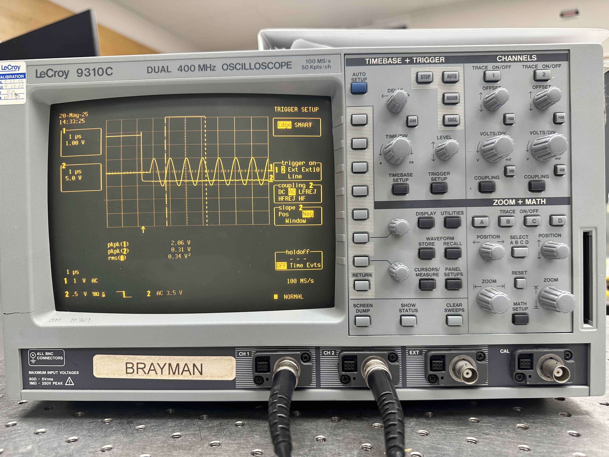
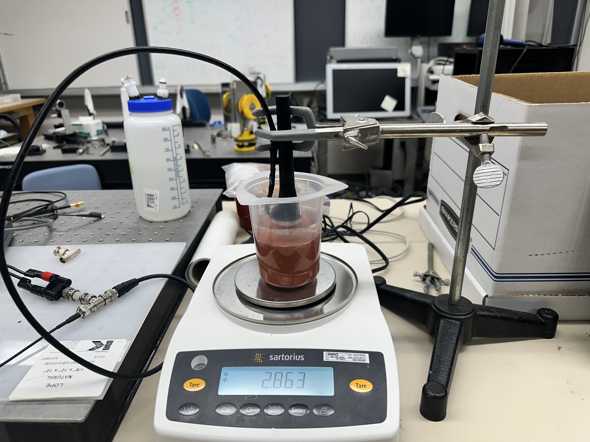

The Problem: Vitreous Floaters
Eye floaters are small shadows or specks that drift across the visual field, caused by clumps of collagen fibers within the vitreous humor — the gel-like substance filling the eye. The phenomenon occurs when collagen fibers detach due to natural gel liquefaction, Posterior Vitreous Detachment (PVD), or trauma, casting shadows on the retina. These disturbances are far more than a minor inconvenience: they affect approximately 60% of individuals over age 60 and are notably more common in patients with myopia.
Floaters interfere with essential daily activities including reading, driving, and recognizing faces. A survey of 311 patients found they would accept an 11% chance of death or a 7% chance of permanent blindness in exchange for relief — risk thresholds comparable to macular degeneration and diabetic retinopathy. This underscores the severity of the unmet need.
The current standard of care is deeply inadequate. Pars plana vitrectomy (PPV) is highly effective but carries serious risks: retinal detachment, cataract formation, endophthalmitis, and extended recovery. YAG laser vitreolysis is less invasive but inconsistent, with some studies showing only 2.5% of patients seeing significant improvement. Observation — the most common recommendation — provides no symptom relief. Pharmacological approaches remain experimental with no proven efficacy.
A safe, non-invasive, precisely controllable method to reposition visually disruptive vitreous floaters for myodesopsia patients — without surgery or retinal risk — is urgently needed.
Acoustic Repositioning: How VitreaClear Works
VitreaClear uses ultrasound-based acoustic tweezers — precisely arranged piezoelectric transducers — to generate controlled acoustic wave fields. These fields create pressure nodes capable of displacing microparticles in a low-impedance medium such as vitreous humor. By steering the pressure nodes, floaters can be repositioned to visually non-disruptive regions of the eye without any incisions or ablation.
Three design concepts were evaluated against a Quality Function Deployment (QFD) matrix:
- Automated YAG Laser Vitreolysis — computer vision assisted targeting of existing laser treatment
- VR Therapy — games to accelerate brain adaptation to floaters
- Acoustic Repositioning (selected) — piezoelectric array generating controlled pressure nodes
Acoustic repositioning scored highest across Critical-to-Customer (CTC) metrics: non-invasiveness, minimal side effects, real-time feedback potential, minimal setup, and patient comfort. Current prototype development follows a medium-escalating approach — beginning with air-based setups, progressing to water-based systems, and targeting cadaver eye validation.
Transducer Selection, Frequency, & Impedance Characterization
- Single-element piezoelectric transducers operating at approximately 1 MHz (validated range: 1–3 MHz)
- Focal length confirmed at approximately 2 cm — matched to vitreous cavity geometry
- Epoxy matching layers demonstrated optimal energy transmission with minimal reflected power
- Reflected power target: ≤6% at the matching layer (per CIMU lab standards)
- Current work transitioning from single-element to phased array configurations
- Vector Network Analyzer: AIM 4170D (Array Solutions) at the Center for Industrial and Medical Ultrasound
- Open-Short-Load (OSL) calibration corrects systematic measurement errors and establishes accurate reference planes
- BNC terminal wiring with coaxial cable proved superior to taped connectors — reduced reflection, improved signal clarity
- Four device configurations tested; coaxial configurations showed best energy transfer
The design adheres to the FDA limit of 50 W/cm² maximum power output for ultrasound technologies. The non-invasive, precisely targeted nature of acoustic manipulation avoids the thermal and mechanical risks of both surgery and laser treatment, satisfying the core design requirements for minimal side effects.
CAD design (SolidWorks) includes the transducer and device assembly, with a future phased array configuration for steering control. The device is designed for minimal patient preparation and straightforward clinical integration.
Water Bath Testing & Force Measurements
Initial prototypes used single-element transducers operating at approximately 1 MHz to demonstrate acoustic particle manipulation in air. Water-based testing — conducted in a 5.5-gallon acrylic tank with degassed, deionized water — more accurately simulates the vitreous environment.
Neutrally buoyant fluorescent polyethylene microspheres (425–500 μm diameter, density matched to water) served as floater surrogates. The test bench consisted of the transducer and 3D-printed lens assembly above the tank, with a rubber absorber covering the tank bottom to minimize reflections.
Key Results:
- Force outputs ranging from 0.010g to 0.043g at power levels between 1.43W and 4.04W
- Consistent particle manipulation observed at 3.7W
- Reflected power remained within the ≤6% target across tested configurations
- Tests run at 1, 2, and 3 MHz — demonstrating manipulation across the operating range
- Water temperature maintained at 20–25°C throughout testing
These results validate the core acoustic manipulation concept and provide baseline performance metrics. The success of epoxy matching layers in reducing energy reflection establishes design parameters for testing in more complex viscous media simulating vitreous conditions.






FDA Pathway, Market Size & Funding
The global ophthalmology market is valued at $77.10 billion in 2024 and projected to grow at a CAGR of 6.4%, reaching $144.04 billion by 2034. VitreaClear targets a subset of this market — the estimated 60% of individuals over 60 affected by symptomatic floaters, with particular prevalence in myopic patients.
| Item | Detail |
|---|---|
| Regulatory Pathway | FDA De Novo pathway — for novel, low-to-moderate risk devices without a predicate. Aligns with VitreaClear's non-invasive classification. |
| IP Status | Provisional patent filed June 2, 2025, under reference 3915-P1409US.PRO.UW: "Manipulation of Eye Floaters Through Utilization of Acoustic Tweezers" |
| Funding | $10,000 seed funding secured through UW Engineering Innovation in Health program |
| University Support | Developed under UW advisorship (Mechanical Engineering + Industrial & Systems Engineering); credibility and IP foundation for market entry |
| Target Users | Ophthalmologists and optometrists treating symptomatic myodesopsia; potential for in-clinic and future home-use devices |
| Next Milestones | Viscous fluid testing (simulating vitreous), porcine eye validation, phased array prototype, comprehensive safety parameter monitoring |
HIC Poster
Download Research Poster (PDF)Spring Final Report
The full 43-page Spring Final Report covers the complete significance analysis, innovation framework, QFD matrix, business model canvas, prototype evaluation, regulatory strategy, IP application, and test procedures.
Download Spring Final Report (PDF)